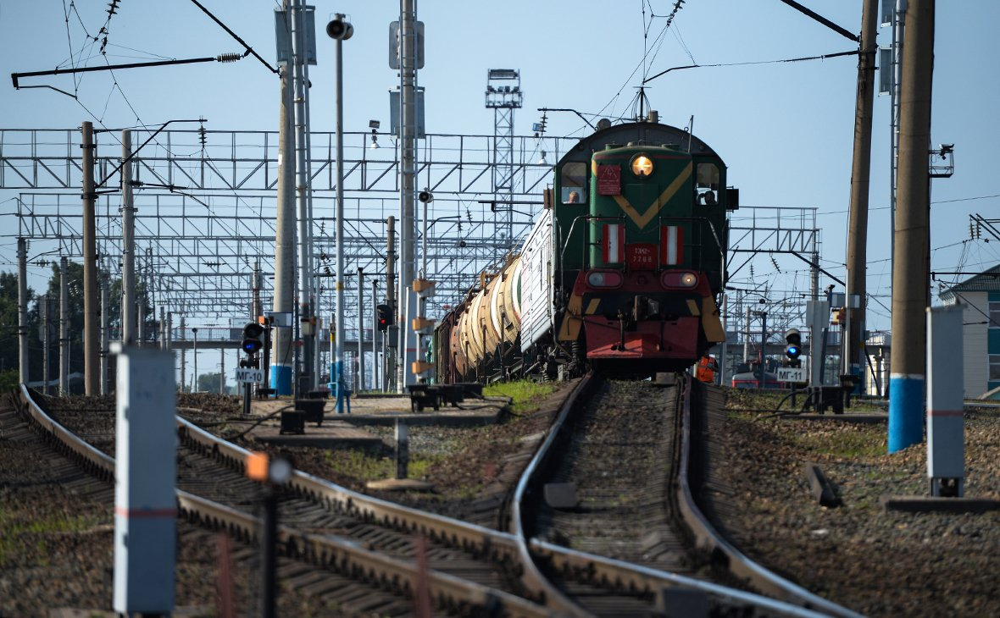

Компании из списка Белоусова могут привлечь к финансированию развития портовой инфраструктуры и дорог, рассказал глава Минтраса Евгений Дитрих. По его словам, взамен правительство может предложить инвесторам договор концессии
Сверхдоходы компаний из списка Белоусова могут быть направлены на развитие железных дорог и портов, заявил глава Минтранса Евгений Дитрих, сообщает ТАСС.
«Некоторые компании из этого списка работают сегодня в морских портах, перегружают те или иные грузы. Вижу возможность такой синергии, когда расширение пропускной способности железной дороги синхронизируется с развитием портовых мощностей, которые берет на себя бизнес», — заявил министр.
По его словам, для того чтобы сделать такие проекты привлекательными для компаний, можно использовать механизм концессии, когда в обмен на вложения в развитие государственной инфраструктуры инвестор получает возможность эксплуатировать тот или иной объект, собирая доход в свою пользу.